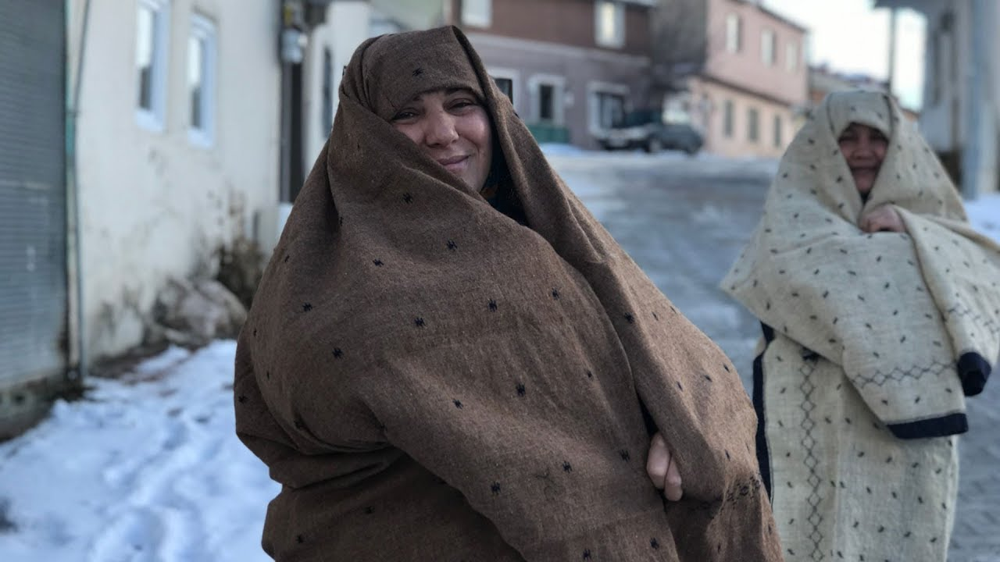

Ehram Nedir?
Ehram ya da ihram, Erzurum ve Bayburt'ta kadınların giydikleri yöresel bir giysi ve bu giysinin yapımında kullanılan kumaşa verilen addır.
Düz yüzeyli mekikli dokuma tekniği ile üretilen ehramın on dokuzuncu yüzyılın ikinci yarısından beri üretildiği düşünülmektedir. Geleneksel olarak koyun yününden kahverengi, siyah ve krem renklerinden üretilir. Erzurum'un coğrafi etiket almış bir ürünüdür.
Günümüzde Ehram
Günümüzde ehram, daha çok kültürel etkinliklerde ve özel gösterimlerde kullanılsa da Bayburt’ta bu geleneği yaşatmaya çalışan ustalar hâlen vardır. Belediyeler ve kadın kooperatifleri destekleriyle ehram, çanta, şal ve aksesuar olarak modern formlarda da üretilmeye başlanmıştır.
Hem kültürel mirası devam ettirme hem de üretimi artırma amacıyla hala bazı yerlerde ehram kumaşı üretimi ve kullanım alanları çeşitlendirilerek (şal, atkı, çanta vb.) sürdürülmektedir.